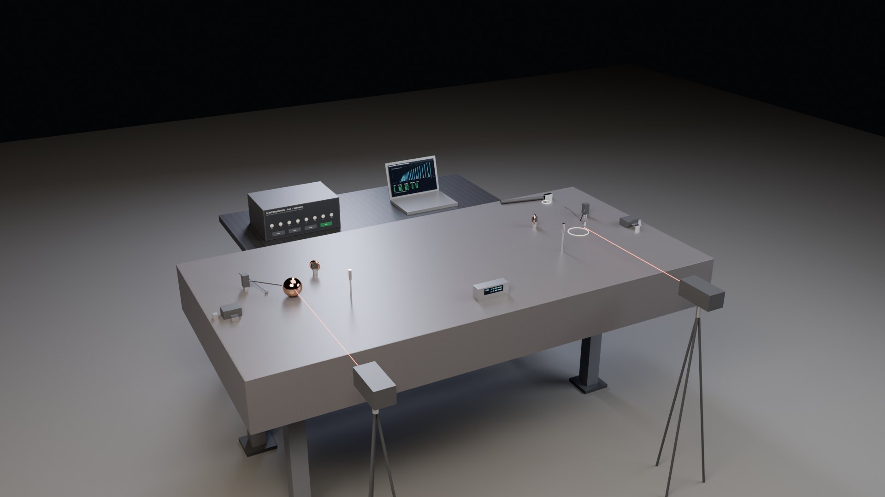
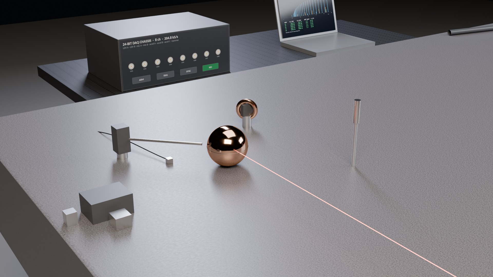

The frequency of a place
Bashar's own test of “location is a vibrational variable in the object itself”: capture the complete ring of a thin copper sphere at one end of a very flat table, capture it again at the other end, find the difference, then play the second place's tone to the first. This page designs that bench with today's instruments, computes what they would read before any new effect, and says what each outcome would mean.

Visualization of the bench. Screens show model values.
Bashar's copper-sphere experiment, in his words
The idea behind this page appears in the index as a single sentence from a 2026 clip of Darryl Anka: location is a property of the object, not a place the object sits in. The experiment to go with it was found only on the web, in two session excerpts of a question-and-answer about gravity (the follow-up matches a question listed for the official 7 December 2014 session, 2015–2016: The Years of Expansion and Contraction). Everything quoted here is a claim made in a channeling session or interview, reported as a claim.
“Location is a vibrational variable in the object itself.”Darryl Anka, recounting Bashar · clip, 2026 · source
“Get a very, very, very flat table that's at least 6 to 10 ft long, very flat.”Bashar, session excerpt · source
“Take a very thin copper ball, about 3 in, 4 in in diameter, hollow, very thin, as perfectly round as you can make it.”Bashar, session excerpt · source
“Strike it and get it to vibrate or vibrate it through some other means. Measure those vibrations as precisely as you can.”Bashar, session excerpt · source
“Then move the ball to the other end of the table and repeat that measurement. Find the difference in those two measurements.”Bashar, session excerpt · source
“Bombard it, overwhelm it in a sense with the vibrational frequency that is specific to the other end of the table when the object was there.”Bashar, session excerpt · source
“It will at least roll across the table to its new position and stop.”Bashar, session excerpt · source
“As soon as your instruments are sensitive enough to tell the difference in the vibration of an object in two different locations…”Bashar, session excerpt · source
The follow-up (Mammoth Awakening upload, Nov 2024) restates it as extracting “the actual tone, the signature frequency of that pure, very thin-shelled copper sphere”, moving it, extracting the tone at B, then “bombard the sphere in location A with the vibrational tone of location B”, after which it “will stop and go no further because it has found its resting point within that vibrational equation” (source). Anka's retellings span 2014 to 2026: BATGAP #236 (“They may be very subtly different, but they're different”, transcript), Next Level Soul Ep. 544, and Mayim Bialik's Breakdown (“everything you consider to be a location has a specific signature frequency to it”, transcript). A session titled Gravity (fan transcript, c. 1997–2000) carries the general form: “each object has its own vibration, its own signature frequency by which you can recognize it” (fan transcript).
What the protocol asks for, as stated: (1) a very flat table at least 6–10 ft long; (2) a thin, hollow, round copper sphere 3–4 in across; (3) the sphere's complete vibration, measured as precisely as possible at end A; (4) the same at end B; (5) the difference; (6) the sphere back at A, driven with B's tone, acoustically or electromagnetically; (7) watch whether it rolls to B and stops. Bashar gives no magnitude for the difference. This page designs steps 1–7 with today's instruments, computes what the instruments will read before any new effect, and states what each possible outcome would mean. It does not pronounce a result; the measurement would.
Corpus check: of the 75 digested recordings only one (98KsASkO8Cs) states the claim; none contains the protocol. Catalogue sessions worth pulling for the full context: How Bashar's Spaceship Flies (1987), Space Time Travel (1991), Resonance of the Land (1997), Gravity (1997), The Years of Expansion and Contraction (7 Dec 2014).
The experiment, as designed
Bashar's “very flat table” is a granite surface plate, the flattest large surface a machine shop owns: 2.4 × 1.2 × 0.25 m, grade AA (flat to about 13 µm over its length), about 1.9 t, on a three-point stand, levelled to within 20 µrad with an electronic level that reads 1 µrad. The sphere is an electroformed or two-piece spun copper shell, 88.9 mm (3½ in) outside diameter, 1.0 mm wall, 217 g, roundness held to 25 µm, with a 1 mm vent hole so that the air inside follows the air outside (the hole's own Helmholtz resonance is near 61 Hz, far from everything else). Spot A and spot B are 1.6 m apart on the centreline; a third spot C, off-axis, is the control for the symmetric pair.
Three ways of exciting the sphere, all repeatable: a solenoid striker with a hard plastic tip that will not dent the copper (as Bashar says, “strike it”), an electromagnetic acoustic transducer coil that drives eddy currents in the copper without touching it, and a chirp from a small horn. Two ways of listening without touching: a laser Doppler vibrometer with beams at the equator and at 45° latitude (an equatorial beam alone misses the axisymmetric member of every odd-order multiplet), and a measurement microphone. The table itself gets an impact hammer and accelerometers. Each spot carries its own sensors for what makes a place a place: temperature, pressure, humidity, magnetic field, floor vibration, acoustic and radio background, and slope.

Parts and instruments
| Item | Specification | Why |
|---|---|---|
| Granite surface plate | 2.4 × 1.2 × 0.25 m, grade AA (ASME B89.3.7), 3-point stand on isolators | “very, very flat”; its own modes start near 193 Hz, far below the sphere's |
| Electronic level | Talyvel/Wyler class, 1 µrad resolution | a 1.5 mrad slope would roll the ball by itself (next sections) |
| Copper sphere | OFE copper, OD 88.9 mm, wall 1.0 ± 0.05 mm, roundness ≤ 25 µm, 1 mm vent hole, seam marked | “hollow, very thin, as perfectly round as you can make it”; the seam and any ovality split each multiplet |
| Support (stage 1b) | three sapphire balls on a PTFE ring, same part carried A → B | makes the contact the same at both spots |
| Striker | solenoid, 3 mm PEEK tip, timed pulse | Bashar's “strike it”, made repeatable without denting the shell |
| EMAT coil | meander coil + NdFeB magnet on a retracting arm, 5–60 kHz drive | “vibrate it through some other means”, without touching; the magnet is pulled back before the ring-down, since it damps the shell by eddy currents |
| Laser Doppler vibrometer | single-point, 0–100 kHz, through-glass capable; beams at the equator and at 45° latitude | non-contact pickup at ppm precision; two latitudes see every member of every multiplet |
| Microphone + horn | ½-in measurement mic; compression driver for stage 2 | air-borne spectrum; the acoustic “bombardment” |
| Coil driver (stage 2) | air-core coil, ≤ 1 mT at the ball, audio amplifier | the electromagnetic “bombardment” |
| Hammer + accelerometers | impact hammer, three 0.5 g accelerometers at A, B, C | the plate's response at each spot |
| Place sensors | PT100 (plate and air), barometer, RH, fluxgate magnetometer, seismic accelerometer, SDR | everything that differs between two places |
| Ball thermometer | the ball itself: the ratio of a torsional to the breathing line changes by 38 ppm/K | a probe on a 1 mm shell would load it and an IR reading of polished copper fails; the two-line ratio resolves 10 mK |
| Motion read-out (stage 2) | laser displacement sensor, 1 µm; camera at 60 fps | detects creep long before rolling |
| DAQ | 24-bit, 204.8 kS/s, 8 synchronous channels | sphere modes reach 60 kHz; one clock for all channels |
What the complete frequency of a copper sphere is
A struck copper shell rings at its elastic resonances. For a thin complete sphere they come in families: a lower branch of spheroidal modes that starts with the five-fold “football” mode at 9.94 kHz, torsional modes from 16.67 kHz, and an upper branch that opens with the breathing mode at 23.92 kHz. Below 60 kHz the model gives 32 modes, which, because a perfect sphere's modes are degenerate (2l + 1 lines each), amount to 682 lines. A real sphere's seam and ovality split those lines, from a few parts in a thousand to a few percent depending on how even the wall is (Duffey and colleagues measured about 3 % for a ±5 % wall), so the measured spectrum is a comb of clusters. The complete spectrum in Bashar's sense is this comb: every line's frequency, width and amplitude.
The frequencies were computed two independent ways that agree to one part in 10⁹ (see checks): the exact three-dimensional elasticity solution for a hollow sphere with both surfaces free (Lamb's 1882 problem extended to two surfaces) and a Rayleigh–Ritz solution of the same strain energy. Baker's membrane theory, a third route, agrees to one part in 10⁴ in the thin-wall limit and shows where bending takes over for this wall. Copper's elastic constants are the Ledbetter–Naimon 1974 values averaged for a polycrystal: E = 127 GPa, G = 47.3 GPa, ν = 0.346, ρ = 8930 kg/m³.
| Mode | f (Hz) | lines | family | membrane theory (Hz) | ppm/K |
|---|---|---|---|---|---|
| S2 | 9943.4 | 5 | lower spheroidal | 9939 | −194 |
| S3 | 11852.9 | 7 | lower spheroidal | 11822 | −191 |
| S4 | 12674.5 | 9 | lower spheroidal | 12573 | −189 |
| S5 | 13192.7 | 11 | lower spheroidal | 12945 | |
| S6 | 13661.4 | 13 | lower spheroidal | 13155 | |
| S7 | 14199.4 | 15 | lower spheroidal | 13286 | |
| S8 | 14878.9 | 17 | lower spheroidal | 13373 | |
| S9 | 15748.7 | 19 | lower spheroidal | 13434 | |
| T2 | 16667.7 | 5 | torsional | 16669 | −199 |
| S10 | 16841.2 | 21 | lower spheroidal | 13478 | |
| S11 | 18175.4 | 23 | lower spheroidal | 13511 | |
| S12 | 19759.3 | 25 | lower spheroidal | 13536 | |
| S13 | 21592.8 | 27 | lower spheroidal | 13556 | |
| S14 | 23670.4 | 29 | lower spheroidal | 13572 | |
| S0 | 23916.2 | 1 | upper spheroidal | 23915 | −160 |
| S15 | 25983.3 | 31 | lower spheroidal | 13585 |
First 16 of 32 modes below 60 kHz, in vacuum. The membrane column is Baker's closed form; the exact solution departs from it as bending takes over at higher l. The temperature coefficient is from the Overton–Gaffney 1955 slopes of copper's elastic constants. In air, the gas inside the shell shifts some of these lines by up to 0.16 % (next sections).
The frequency of a point on the table
A point on a table has a spectrum of its own: tap it and it answers with the table's modes, weighted by how much each mode moves at that point. That driving-point response is measured with an impact hammer and an accelerometer; it is the standard way to give a location on a structure a frequency signature. For the granite plate the model's first six free modes lie between 193 and 919 Hz. Spots A and B are mirror images about the plate's centre, so an ideal plate gives them identical responses; spot C, off-axis, differs. That is a design choice: if A and B are meant to differ as places, the plate should not be able to tell them apart.
The sphere also changes the table's frequencies, by an amount that depends on where it sits: its 217 g shifts the fifth mode (784 Hz) by -60 ppm at A and -20 ppm at C, and the second mode (243 Hz) by -0 ppm at A and -69 ppm at C. That is a location-dependent frequency of the coupled system, and it is the ordinary kind: it comes from the mode shape of the plate. (The point-mass estimate holds for plate modes well below the ball's bounce on its contact, about 693 Hz.)
Beyond the table, each place is described by what the place sensors log: surface and air temperature, pressure and humidity, the magnetic field vector, floor vibration, the acoustic and radio background, and slope. Those are the quantities the protocol must record at A and at B before any difference in the sphere can be attributed to the place rather than to the surroundings.
What changes when the ball changes place, in the baseline model
Before any new physics, several known effects can make the sphere read differently at A and at B. The design has to measure or remove each of them so that only an unexplained difference would remain. The chart ranks them in parts per million of a mode frequency against the smallest difference the design can claim.
Contact with the plate (large)
Resting on granite, the shell touches at a Hertz contact 244 µm across with a stiffness of 9.5 MN/m, comparable to the shell's own point stiffness (7.1 MN/m). The model couples all axisymmetric modes through that spring (44 angular orders; the shifted lines are converged to 0.01 %, the bounce frequency to about 1 %): the m = 0 member of the football multiplet rises by 0.64 % (63 Hz), the two |m| = 1 members by about 0.12 % through friction, the rest hardly at all. A ±20 % change in contact stiffness between two spots moves the shifted line by 853 ppm. The contact also adds a rigid bounce mode near 693 Hz. This is why stage 1b carries the same cradle from A to B.
Temperature (large)
Copper's moduli fall with temperature: every mode shifts by about −194 ppm per kelvin (−160 for the breathing mode). A 0.5 K difference between the ends of a 2.4 m plate is 100 ppm. The sphere's temperature must be logged and the lines corrected with a coefficient measured on this sphere; correcting to 10 mK leaves 2 ppm, the design floor.
Air outside and inside (large for some lines)
Outside, air loads the shell and radiates its sound: in air the football mode's quality factor is limited to about 1359, so a strike rings down in 44 ms; the reactive part shifts frequencies by at most 736 ppm, of which a 1 K change moves about 2.5 ppm. Inside, the trapped air has cavity resonances of its own (2.6, 4.2, 5.7, 5.7, 7.1, 7.5, 8.5, 9.2 kHz …), and a shell line that sits near one of them is pulled: in the model the football line moves by +471 ppm and the l = 4 line by +1623 ppm, the latter changing by 141 ppm per kelvin of air temperature, as much as the copper itself. The vent hole and the bell jar remove both effects; without a vent, a sealed shell in vacuum would carry 2.2 MPa of membrane stress.
Motion (only while moving)
While the sphere travels at 5 cm/s, a microphone hears every line Doppler-shifted by 145 ppm; the vibrometer, which measures surface velocity, does not. At rest the shift is zero.
Fields (the one place-tag in the baseline model)
Copper's nuclei precess at 564 Hz (⁶³Cu) and 605 Hz (⁶⁵Cu) in Earth's 50 µT field, 11.3 Hz per µT; the field across a lab varies by about 1 µT, so this frequency does differ between A and B. It is a property of the field at the place, measurable with a magnetometer. The static field does nothing to the elastic lines (eddy damping rate 2×10⁻⁵ s⁻¹).
Gravity (negligible)
A one-tonne mass near one end changes g by 10⁻⁹ of itself; through the shell's static stress that is 4×10⁻¹⁷ of a mode frequency. The gravitational redshift of a clock moved 1 mm in height is 10⁻¹⁹. Both are far below anything the bench can see.
The frequency estimate itself is not the limit: fitting one 44 ms ring-down at 40 dB signal-to-noise bounds the error at 0.9 mHz on a 10 kHz line (Cramér–Rao for a steady tone; two to three times that for a decaying one), or about 0.3 ppm at worst. The design floor of about 2 ppm is set by temperature and support repeatability, and it applies to lines measured in the bell jar or far from an interior air resonance.
Three stages, with controls
Stage 0 · the places
- Level the plate to ≤ 20 µrad; record flatness map.
- Hammer survey: driving-point response at A, B, C (10 hits each).
- Log at A and B for 24 h: temperature (plate, air), pressure, humidity, magnetic field, floor vibration, acoustic and RF background.
- Put the sphere's own temperature coefficient on record: sweep 18–26 °C in the bell jar at A and fit ppm/K per line.
Stage 1 · the sphere's spectrum at A, then at B
- Mark the seam; the sphere keeps the same orientation throughout.
- 1a, bare plate (Bashar's set-up): strike, EMAT and chirp excitation, 10 repeats each, re-seating the sphere between repeats; record LDV, microphone, ball temperature.
- 1b, cradle, then 1c, cradle in the bell jar: same sequence. The EMAT magnet is retracted before every ring-down.
- Move to B along the centreline on a padded carrier, no rotation; repeat 1a–1c; return to A and repeat (A, B, A, B).
- Fit every line (frequency, width, amplitude); read the ball's temperature from the torsional-to-breathing line ratio; correct for temperature and air density; compare A and B line by line.
Stage 2 · “the tone of B”, played at A
- Build the drive signal from the B spectrum: all fitted lines at their amplitudes; also the A − B difference spectrum.
- Play it at A through the horn (≤ 140 dB at the ball, inside an enclosure, hearing protection worn) and through the coil (≤ 1 mT, 20 % duty), one at a time, for 10 min each; record displacement at 1 µm, video, and the ball's temperature, since the coil alone warms it by about 0.7 K per 10 min at full duty.
- Controls, same durations: the A tone; band-limited noise; silence; and the same B tone with the driver moved to the far side of the ball. Map the sound field around the ball first: in a standing wave a ball drifts toward a pressure node whichever side the horn is on.
- Repeat with the sphere at B driven with the A tone.
What each outcome would mean
- Stage 1, lines agree within the floor: no location signature above about 2 ppm at these two spots with this sphere. Bashar's protocol sets no magnitude, so this bounds it rather than closes it.
- Lines differ, and the difference follows temperature, contact or air: a difference of the surroundings, already in the budget.
- Lines differ, the difference survives the cradle and the bell jar, reverses on A ↔ B, and repeats: a candidate location signature; replicate on another plate, in another building, with another sphere.
- Stage 2, motion toward B that the controls do not produce: the thresholds below say what ordinary forces can do; anything beyond them, in the predicted direction, repeatable, is the signal the claim predicts.
Forces that can move the ball anyway
In a travelling wave, radiation pressure and eddy-current forces push the ball away from the driver; the claim predicts motion toward B whichever side the driver is on. Putting the driver on the far side of the ball is therefore the decisive control: ordinary forces and the claimed effect then point in opposite directions. Vibration-induced creep is measured with the drive off, and tilt is checked with the level before and after every run.
Calculation check
Every number on this page comes from two Python files, sphere_modes.py and fp_model.py, published next to this page with their output, fp_results.json. The sphere frequencies are computed by methods that share only Hooke's law, and the solid-sphere limit is compared with published tables.
| Check | Method A | Method B or reference | Agreement |
|---|---|---|---|
| Solid sphere, ν = 0.33: T2 | exact determinant: ωR/c_T = 2.5011 | Lobo 1995 table: 2.5011 | 1.3×10⁻⁵ |
| Solid sphere, ν = 0.33: S2 | exact determinant: ωR/c_T = 2.6497 | Lobo 1995 table: 2.6497 | 5.4×10⁻⁶ |
| Solid sphere, ν = 0.33: S1 | exact determinant: ωR/c_T = 3.5895 | Lobo 1995 table: 3.5895 | 1.2×10⁻⁵ |
| Solid sphere, ν = 0.33: S0 | exact determinant: ωR/c_T = 5.4322 | Lobo 1995 table: 5.4322 | 8.2×10⁻⁶ |
| Solid sphere, ν = 0.33: T1 | exact determinant: ωR/c_T = 5.7635 | Lobo 1995 table: 5.7635 | 7.1×10⁻⁶ |
| Hollow shell, 14 modes below 45 kHz | exact 3-D determinant (spherical Bessel functions) | Rayleigh–Ritz on the 3-D strain energy | 1.4×10⁻⁹ |
| Thin limit, 0.1 mm wall | exact 3-D determinant | Baker 1961 membrane theory | 8.0×10⁻⁵ |
| Granite plate, square free plate test | Rayleigh–Ritz plate: 13.468, 19.596, 24.270, 34.801 | Leissa 1969: 13.468, 19.596, 24.270, 34.801 | 1.5×10⁻⁵ |
| Thin-shell data point | membrane theory for Duffey et al. 2007's stainless float (R/h ≈ 71.5) | their measured n = 2 line: 5088 Hz vs their theory 5078 Hz | reported |
Inputs: Ledbetter & Naimon 1974 copper constants (C₁₁ = 169.1, C₁₂ = 122.2, C₄₄ = 75.42 GPa, Hill average); Overton & Gaffney 1955 temperature slopes; Johnson's contact mechanics for the Hertz contact; Reissner's point-load stiffness of a spherical shell; Leissa's free-plate values; the Cramér–Rao bound for a sinusoid in noise. The contact coupling, the interior air loading (first order in the added mass) and the exterior air bound are first-principles estimates, not fits to data; they set the size of the effects, not their last digit.
Papers and topics: a network chart
Two bodies of work meet here. The physics and engineering literature the design rests on: 82 sources in 13 topics, from Lamb's 1882 sphere to this year's machine-learning inversions of resonant ultrasound spectra. And the 2025–2026 science and mathematics releases of the AI laboratories: 43 items from OpenAI, Anthropic, Google DeepMind and third parties, each with its verification status as reported (Lean-formalised, independently checked, author-verified, self-reported, or disputed).
The honest finding of the search: none of the laboratory releases touches elastic eigenvalue problems, modal analysis, inverse spectral problems or measurement design. The nearest are third-party, AI-assisted preprints on the Schiffer and Pompeiu eigenvalue problems and on the spectrum of a Laplacian on 3-spheres, drawn in amber. One caveat: the full contents file of OpenAI's bulk release could not be read, so a spectral paper buried in it cannot be ruled out. What this body of work offers the design is method: rigorous computer-assisted certificates for computed eigenvalues (from the third-party Schiffer preprint), independent formal checking as practised in the laboratory releases, and a documented list of ways agentic physics work goes wrong, including fabricated intermediate results and over-claimed verification.
Laboratory releases as a list (43)
| Item | Org | Date | Field | Verification as reported |
|---|---|---|---|---|
| Anthropic AI for Science program | Anthropic | 2025-05 | life sciences | n/a |
| AlphaEvolve (blog) | Google DeepMind | 2025-05 | optimization/combinatorics | self-reported; checkable constructions |
| Gemini Deep Think IMO gold | Google DeepMind | 2025-07 | olympiad math | IMO-graded |
| GPT-5 Pro step-size bound 1.5/L | OpenAI | 2025-08 | convex optimization | self-reported; superseded by human 1.75/L |
| Limits to black-box amplification in QMA | other | 2025-09 | quantum complexity | self-reported (key step from GPT-5) |
| Oct-2025 Erdős overclaim (retracted) | OpenAI | 2025-10 | combinatorics (literature search) | disputed/retracted |
| Early science acceleration experiments with GPT-5 | OpenAI | 2025-11 | multi-field | self-reported; 4 math results human-verified |
| Mathematical exploration and discovery at scale | Google DeepMind | 2025-11 | analysis/combinatorics/geometry/number theory | self-reported |
| FrontierScience benchmark | OpenAI | 2025-12 | physics/chem/bio evals | self-reported eval |
| Erdős #728 via GPT-5.2 Pro | OpenAI | 2026-01 | combinatorics | Lean-verified via Aristotle |
| C-parameter Sudakov shoulder resummation (vibe physics) | Anthropic | 2026-01 | QCD/SCET | self-validated by author; not peer-reviewed |
| Numina-Lean-Agent | other | 2026-01 | formal mathematics | Lean-verified |
| Semi-autonomous discovery with Gemini (Erdős) | Google DeepMind | 2026-01 | combinatorics/number theory | partially verified |
| Single-minus gluon tree amplitudes are nonzero | OpenAI | 2026-02 | QFT/amplitudes | author-verified; preprint |
| First Proof submissions | OpenAI | 2026-02 | research mathematics | self-reported; contested |
| Anthropic field notes, Feb 2026 | Anthropic | 2026-02 | meta | n/a |
| Claude's Cycles (Knuth) | other | 2026-02 | combinatorics | Lean-verified (odd m) |
| Towards Autonomous Mathematics Research (Aletheia) | Google DeepMind | 2026-02 | combinatorics/algebra | self-reported; some Lean |
| Single-minus graviton tree amplitudes are nonzero | OpenAI | 2026-03 | QFT/gravity amplitudes | author-verified; preprint |
| HorizonMath | other | 2026-03 | math discovery benchmark | auto-verified; ICML AI4Math best paper |
| Anthropic Science blog launch | Anthropic | 2026-03 | meta | n/a |
| Erdős unit-distance conjecture disproved | OpenAI | 2026-05 | discrete geometry | independently verified (Gowers et al.) |
| Hodge Laplacian on 1-forms of homogeneous 3-spheres | other | 2026-05 | spectral geometry | self-reported; AI-found formal proof |
| FrontierMath (Tier 4) | Epoch AI | 2026-06 | math benchmark | third-party eval; OpenAI funding/access caveat |
| AI contributions to Erdős problems (Tao wiki) | other | 2026-06 | combinatorics/number theory | per-entry; many Lean |
| Ten advances in mathematics and TCS | OpenAI | 2026-08 | sphere packing, codes, groups, operator algebras, complexity, Ramsey | Lean-verified (self) |
| Claude: 67.2% of zeta zeros on the critical line | Anthropic | 2026-08 | analytic number theory | Lean-verified; internal validation |
| Computer-assisted counterexample to Pompeiu & Schiffer | other | 2026-08 | spectral theory / rigorous numerics | rigorous certificate; not peer-reviewed |
| Counterexamples to Schiffer's conjecture | other | 2026-08 | spectral theory / bifurcation | Lean check claimed; not peer-reviewed |
| Navier-Stokes & Euler blow-up (OpenAI) | OpenAI | 2026-09 | fluid PDE | Lean-verified (self); priority disputed |
| Advisory Group on Mathematics and AI | OpenAI | 2026-09 | research practice | n/a |
| Forced blow-up: IPM, Boussinesq, Euler (Alpöge-Buckmaster) | other | 2026-09 | fluid PDE | Lean-verified; exposition & priority disputed |
| Nine-loop N=4 SYM hexagon amplitude | Anthropic | 2026-09 | scattering amplitudes | independently verified (Dixon) |
| 722-manuscript bulk release (openai/math) | OpenAI | 2026-10 | 17 disciplines | ~22% Lean-verified; 3 retracted; rest self-reported |
| Quasi-Riemann Hypothesis / Landau-Siegel exclusion | OpenAI | 2026-10 | analytic number theory | Lean-verified (per catalogue) |
| Counterexample to Hadwiger's conjecture | OpenAI | 2026-10 | graph theory | Lean-verified (self) |
| Integer multiplication below n log n | OpenAI | 2026-10 | algorithms | unverified |
| Symmetric & general Mahler conjectures | OpenAI | 2026-10 | convex geometry | partially Lean-verified |
| 3D relativistic Vlasov-Maxwell | OpenAI | 2026-10 | kinetic PDE | unverified |
| Quantum Heisenberg ferromagnet & Mézard-Parisi | OpenAI | 2026-10 | statistical mechanics | unverified |
| Claude-shaped science (BootLoops) | Anthropic | 2026-10 | multi-field | mostly under verification |
| Efficient quantum circuits with Claude | Anthropic | 2026-10 | quantum computing | evaluator-verified; Lean identities |
| ECDSA curve seed origins | Anthropic | 2026-10 | cryptography | reproducible code |
Counts and statuses were collected on 22 October 2026 from the laboratories' own pages, arXiv and the sources logged in the research notes. OpenAI's bulk release was announced as 722 manuscripts with 162 (22 %) Lean-formalised and three later retracted; its repository README, read the same day, lists 719 manuscripts in 372 families and puts the Lean-formalised share of top-line results at about 42 %. Both figures are the laboratory's own. Disputes (the October 2025 Erdős over-claim, the Navier–Stokes priority question) are recorded as disputes.
Sources and method notes
Recordings. Session excerpts: Bashar Reveals How ET Ships Actually Travel Across the Universe (Bashar Spiritual Insights; the protocol) and How Objects Teleport: Bashar's Gravity and Frequency Experiment (Mammoth Awakening, Nov 2024; the follow-up, matching a question listed for the 7 Dec 2014 session on Bashar Communications' Vimeo). Interviews: Heart Coherence Collaborative clip (2026); BATGAP #236 (June 2014); Next Level Soul Ep. 544 (Jan 2025); Mayim Bialik's Breakdown (Mar 2026); Gravity (fan transcript, c. 1997).
Transcripts. Wording was taken from auto-caption transcripts served by youtubetotranscript.com and from the podcast and interview sites linked above; the YouTube pages themselves and seven other transcript services were blocked or returned no captions. Quotes are kept to 30 words and link to the recording. A fifth video found in search, What is Bashar's COPPER BALL TECHNIQUE? (UEH7N1aZIZk), could not be opened.
Numbers. All model values are from fp_model.py run on 22 October 2026 with the inputs listed under checks; they describe a baseline, not a measurement. The sphere and plate are parametrised; change the inputs and rerun.
Not affiliated. This page is part of an independent research site. It is not affiliated with, endorsed by, or connected to Bashar Communications, Inc. or Darryl Anka. Claims in sessions and interviews are reported as claims.
Physics and engineering sources used in the design (82)
- On the Vibrations of an Elastic Sphere — H. Lamb, Proc. London Math. Soc. s1-13, 189-212 1882
- What can we learn about GW physics with an elastic spherical antenna? — J. A. Lobo, Phys. Rev. D 52, 591 1995
- Longitudinal versus transverse spheroidal vibrational modes of an elastic sphere — L. Saviot, D. B. Murray, Phys. Rev. B 72, 205433 2005
- Basic study on the oscillation of a homogeneous elastic sphere — Y. Sato, T. Usami, Geophys. Mag. 31, 15 1962
- Novel Method of Measuring Elastic and Anelastic Properties of Solids — D. B. Fraser, R. C. LeCraw, Rev. Sci. Instrum. 35, 1113 1964
- Elastic Constants and Their Measurement — E. Schreiber, O. L. Anderson, N. Soga, McGraw-Hill (ISBN 0070556032) 1973
- On the Determination of Elastic and Anelastic Properties of Isotropic Spheres — M. L. Smith, US Army CRREL Research Report 299 1972
- The resonant ultrasound spectroscopy method for determining the Poisson's ratio of spheres over the full range — D. Li, L. Dong, R. S. Lakes, Materials Letters 143, 31-34 2015
- Sphericity determination using resonant ultrasound spectroscopy (US Patent 5,355,731) — A. Migliori et al. (Regents of Univ. California), US Patent 1994
- A new closed-form model for isotropic elastic sphere including new solutions for the free vibrations problem — E. Hanukah, arXiv:1311.0741 2013
- Resonant Ultrasound Spectroscopy: Applications to Physics, Materials Measurements, and Nondestructive Evaluation — A. Migliori, J. L. Sarrao, Wiley (ISBN 0471123609) 1997
- Resonant ultrasound spectroscopic techniques for measurement of the elastic moduli of solids — A. Migliori, J. L. Sarrao, W. M. Visscher, T. M. Bell, M. Lei, Z. Fisk, R. G. Leisure, Physica B 183, 1-24 1993
- On the normal modes of free vibration of inhomogeneous and anisotropic elastic objects — W. M. Visscher, A. Migliori, T. M. Bell, R. A. Reinert, J. Acoust. Soc. Am. 90, 2154 1991
- Resonant Ultrasound Spectroscopy — J. Maynard, Physics Today 49(1), 26-31 1996
- Rapid method for computing the mechanical resonances of irregular objects — A. Shragai, F. Theuss, G. Grissonnanche, B. J. Ramshaw, J. Acoust. Soc. Am. 153, 119-123 2023
- Temperature Variation of the Elastic Constants of Cubic Elements. I. Copper — W. C. Overton Jr., J. Gaffney, Phys. Rev. 98, 969-977 1955
- Elastic Properties of Metals and Alloys. II. Copper — H. M. Ledbetter, E. R. Naimon, J. Phys. Chem. Ref. Data 3, 897 1974
- Elastic constants and internal friction of polycrystalline copper — H. Ledbetter, C. Fortunko, P. Heyliger, J. Mater. Res. 10, 1352-1353 1995
- Contactless mode-selective resonance ultrasound spectroscopy: Electromagnetic acoustic resonance — H. Ogi, H. Ledbetter, S. Kim, M. Hirao, J. Acoust. Soc. Am. 106, 660-665 1999
- Laser Doppler Vibrometry: Development of advanced solutions answering to technology's needs — P. Castellini, M. Martarelli, E. P. Tomasini, Mech. Syst. Signal Process. 20, 1265-1285 2006
- An international review of laser Doppler vibrometry: Making light work of vibration measurement — S. J. Rothberg et al., Opt. Lasers Eng. 99, 11-22 2017
- EMATs for Science and Industry: Noncontacting Ultrasonic Measurements — M. Hirao, H. Ogi, Kluwer/Springer (ISBN 978-1-4020-7494-3) 2003
- NDE applications of air-coupled ultrasonic transducers — W. A. Grandia, C. M. Fortunko, Proc. IEEE Ultrasonics Symposium, 697-709 1995
- Air-coupled ultrasound using broadband shock waves from piezoelectric spark igniters — K. G. Scheuer, R. G. DeCorby, arXiv:2403.08641 2024
- Modal Testing: Theory, Practice and Application, 2nd ed. — D. J. Ewins, Research Studies Press (ISBN 0863802184) 2000
- Vibration of Plates — A. W. Leissa, NASA SP-160 1969
- The free vibration of rectangular plates — A. W. Leissa, J. Sound Vib. 31, 257-293 1973
- Experimental Modal Analysis: A Simple Non-Mathematical Presentation — P. Avitabile, Sound & Vibration 35(1), 20-31 2001
- The effects of accelerometer inertia on measurements of beam vibration — B. R. Mace, Proc. Inst. Acoust. 12(1), 957-974 1990
- The Theory of Sound (2nd ed., Dover reprint) — J. W. S. Rayleigh, Dover (ISBN 0486602923) 1945
- Contact Mechanics — K. L. Johnson, Cambridge University Press (ISBN 0521255767) 1985
- Principles and Techniques for Designing Precision Machines, Appendix C: Contact Mechanics — L. C. Hale, MIT PhD thesis, pp. 417-426 1999
- Optical Clocks and Relativity — C. W. Chou, D. B. Hume, T. Rosenband, D. J. Wineland, Science 329, 1630-1633 2010
- Resolving the gravitational redshift across a millimetre-scale atomic sample — T. Bothwell et al., Nature 602, 420-424 2022
- Vertical gravity gradient determination for the needs of contemporary absolute gravity measurements - first results — P. Dykowski, Reports on Geodesy 92(1), 23-35 2012
- The variation of the specific heat ratio and the speed of sound in air with temperature, pressure, humidity, and CO2 concentration — O. Cramer, J. Acoust. Soc. Am. 93, 2510-2516 1993
- NMR nomenclature. Nuclear spin properties and conventions for chemical shifts (IUPAC Recommendations 2001) — R. K. Harris, E. D. Becker, S. M. Cabral de Menezes, R. Goodfellow, P. Granger, Pure Appl. Chem. 73, 1795-1818 2001
- Metallic Shifts in NMR: A review of the theory and comprehensive critical data compilation of metallic materials — G. C. Carter, L. H. Bennett, D. J. Kahan, Progress in Materials Science 20, Pergamon 1977
- Can One Hear the Shape of a Drum? — M. Kac, Amer. Math. Monthly 73(4, Part II), 1-23 1966
- One cannot hear the shape of a drum — C. Gordon, D. L. Webb, S. Wolpert, Bull. Amer. Math. Soc. 27, 134-138 1992
- The vibrational frequencies of the elastic body and its geometric quantities — G. Liu, arXiv:1512.07552 2015
- Geometric invariants of spectrum of the Navier-Lame operator — G. Liu, arXiv:2007.09730 2021
- Fourier Neural Operator for Parametric Partial Differential Equations — Z. Li, N. B. Kovachki, K. Azizzadenesheli, B. Liu, K. Bhattacharya, A. Stuart, A. Anandkumar, ICLR 2021 2021
- Learning nonlinear operators via DeepONet based on the universal approximation theorem of operators — L. Lu, P. Jin, G. Pang, Z. Zhang, G. E. Karniadakis, Nature Machine Intelligence 3, 218-229 2021
- Physics-informed neural networks: A deep learning framework for solving forward and inverse problems involving nonlinear partial differential equations — M. Raissi, P. Perdikaris, G. E. Karniadakis, J. Comput. Phys. 378, 686-707 2019
- Spectral Inference Networks: Unifying Deep and Spectral Learning — D. Pfau, S. Petersen, A. Agarwal, D. Barrett, K. Stachenfeld, ICLR 2019 2019
- Neural Spectral Methods: Self-supervised learning in the spectral domain — Y. Du, N. Chalapathi, A. Krishnapriyan, ICLR 2024 2024
- STNet: Spectral Transformation Network for Solving Operator Eigenvalue Problem — H. Wang, Y. Jiang, J. Wang, X. Li, J. Luo, H. Dong, NeurIPS 2025, pp. 50791-50817 2025
- Can a neural network hear the shape of a drum? — Y. Zhao, M. M. Fogler, arXiv:2203.08073 / APS March Meeting 2022 2022
- Instant recovery of shape from spectrum via latent space connections — R. Marin, A. Rampini, U. Castellani, E. Rodola, M. Ovsjanikov, S. Melzi, 3DV 2020 (arXiv:2003.06523) 2020
- Deep-Learning-Assisted Resonant Ultrasound Spectroscopy for Cubic Solids — H. Fukuda, A. Nagakubo, O. B. Wright, K. Kyotani, H. Ogi, Phys. Rev. Applied 20, 034048 2023
- A modulated fingerprint assisted machine learning method for retrieving elastic moduli from resonant ultrasound spectroscopy — J. Liu, X. Zhao, K. Zhao, V. G. Goncharov, J. Delhommelle, J. Lin, X. Guo, Sci. Rep. 13, 5919 2023
- Physics-informed learning for the inverse problem in resonant ultrasound spectroscopy — A. Cubillos Munoz, M. Rivas, J. Rincon, arXiv:2608.27590 2026
- AI Feynman: A physics-inspired method for symbolic regression — S.-M. Udrescu, M. Tegmark, Science Advances 6, eaay2631 2020
- Deep Adaptive Design: Amortizing Sequential Bayesian Experimental Design — A. Foster, D. R. Ivanova, I. Malik, T. Rainforth, ICML 2021, PMLR 139, 3384-3395 2021
- AutoSciLab: A Self-Driving Laboratory for Interpretable Scientific Discovery — S. Desai, S. Addamane, J. Y. Tsao, I. Brener, L. P. Swiler, R. Dingreville, P. P. Iyer, AAAI 2025 (arXiv:2412.12347) 2025
- On the Vibrations of a Spherical Shell — H. Lamb, Proc. London Math. Soc. s1-14, 50-56 1882
- On the low-frequency vibrational modes of C60 (summary of Lamb's thin-shell results) — D. P. Clougherty, J. P. Gorman, arXiv:mtrl-th/9604002 1995
- Axisymmetric Modes of Vibration of Thin Spherical Shell — W. E. Baker, J. Acoust. Soc. Am. 33(12), 1749-1758 1961
- Nonaxisymmetric Modes of Vibration of Thin Spherical Shells — A. Silbiger, J. Acoust. Soc. Am. 34, 862 1962
- Effect of Bending on Vibrations of Spherical Shells — A. Kalnins, J. Acoust. Soc. Am. 36(1), 74-81 1964
- Free vibrations of thin elastic spherical shells — F. I. Niordson, Int. J. Solids Struct. 20, 667-687 1984
- Vibrations of complete spherical shells with imperfections — T. A. Duffey, J. E. Pepin, A. N. Robertson, M. L. Steinzig, K. Coleman, J. Vib. Acoust. 129(3), 363-370 (IMAC-XXIII preprint LA-UR-04-6904) 2007
- Abaqus Benchmarks Guide 1.4.1: Free vibrations of a spherical shell — Dassault Systemes, Abaqus 2016 documentation 2016
- Vibrations of Shells and Plates, 3rd ed. — W. Soedel, Marcel Dekker / CRC Press (ISBN 9780824756291) 2004
- Vibrations of a spherical shell. Comparison of 3-D elasticity and Kirchhoff shell theory results — Y.-C. Chang, L. Demkowicz, Comput. Assist. Mech. Eng. Sci. 2(3), 187-206 1995
- Three-dimensional and shell-theory analysis of elastic waves in a hollow sphere, Parts I-II — A. H. Shah, C. V. Ramkrishnan, S. K. Datta, J. Appl. Mech. 36, 431-439; 440-444 1969
- Stresses and small displacements of shallow spherical shells, I and II — E. Reissner, J. Math. Phys. (MIT) 25, 80-85; 279-300 1947
- Indentation of Ellipsoidal and Cylindrical Elastic Shells — D. Vella, A. Ajdari, A. Vaziri, A. Boudaoud, Phys. Rev. Lett. 109, 144302 2012
- Deflection solutions for concentrated force on spherical shell — Wang Fan, Wang Xing, ICCET 2015 (Atlantis Press), 253-256 2015
- Surface Plates - Accuracy and Calibration (EDU-15004A) — Mitutoyo Institute of Metrology, Mitutoyo America 2018
- Starrett Catalog 33 p. 411: granite surface plate grades and repeat-reading tolerances — The L.S. Starrett Company, catalogue 2019
- Taylor Hobson introduces Talyvel 6 wireless electronic level — In Compliance Magazine, product news 2015
- Wyler BlueLEVEL-2D product sheet — Wyler AG / Symetrie, datasheet 2021
- Rolling resistance — Wikipedia contributors, Wikipedia 2025
- The mechanism of rolling friction. II. The elastic range (and Part I with Eldredge) — D. Tabor; K. R. Eldredge, D. Tabor, Proc. R. Soc. Lond. A 229, 198-220; 181-198 1955
- pyEMA / sdypy-EMA: experimental and operational modal analysis — LADISK, University of Ljubljana, GitHub (MIT) 2025
- sdypy: Structural Dynamics Python — SDyPy organisation, GitHub (MIT) 2025
- nidaqmx-python: NI-DAQmx Python API — National Instruments, GitHub / Read the Docs (v1.6.0) 2025
- RUScal: Software for the analysis of resonant ultrasound spectroscopy measurements — J. Torres, A. Flores-Betancourt, R. P. Hermann, J. Acoust. Soc. Am. 151(5), 3547-3563 2022
- Resonant Ultrasound Spectroscopy for Irregularly-Shaped Samples and its Application to Uranium Ditelluride — F. Theuss et al., B. J. Ramshaw, Phys. Rev. Lett. 132, 066003 2024
- The Spherical Resonator — W. J. Gallagher, W. J. Gallagher, IEEE Trans. Nucl. Sci. NS-32(5) (PAC 1985) 1985